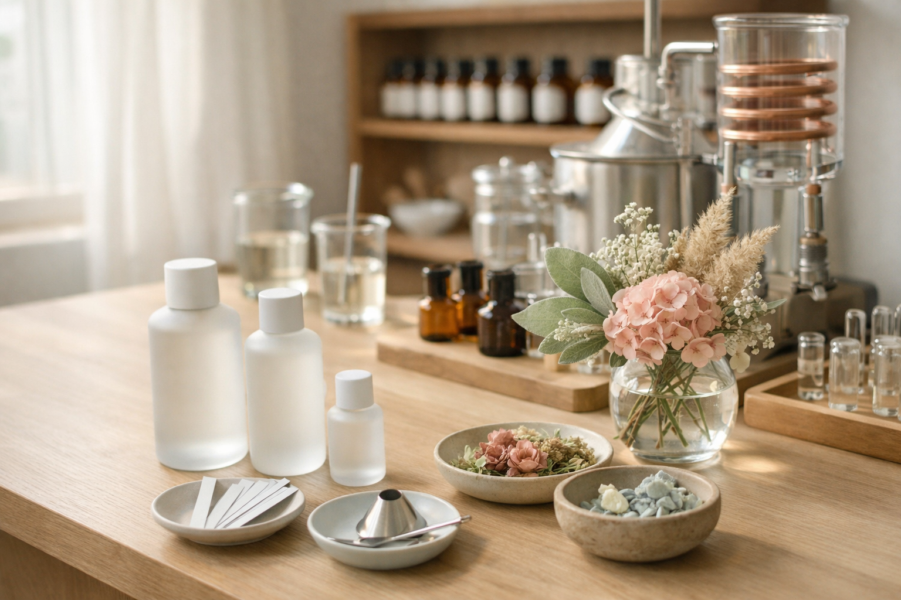

答える
前半は香り・色・気分・使いたいシーン・音楽など、答えやすい質問だけで進みます。
- 1問1答で、迷わず直感で選べる
- 8問・約1分の軽さを最初から明示
- 途中まででも結果へ進める設計に接続しやすい
8問・約1分で、今のあなたに合う香りバランスのベースをつくります。診断で決めきるのではなく、最後は当日スタッフと一緒に仕上げます。
前半は香り・色・気分・使いたいシーン・音楽など、答えやすい質問だけで進みます。
5問目までは共通、後半2問は回答傾向に応じて少しだけ分岐します。自分向けに聞かれている感触をつくるための設計です。
回答内容はそのまま確定結果になるのではなく、当日スタッフと会話を始めるための起点になります。

固定5問で傾向をつかみ、分岐2問で少しだけ自分向けに深掘りします。最後はレーダー風グラフとスライダーで全体像を見ながら調整できます。

香りづくりはこの今、瞬間から
結果は固定されず、当日にも調整できます。
最終的に決めるのはあなた自身です。
回答は提案の起点です。当日の香りは店頭で調整し、最終的にはご自身で決められます。
香料の専門説明や深いパーソナル要素は前面に出さず、まずはあなたの感覚が一つの正解です。
香りや気分など、直感で選びやすい内容です。前半5問は共通、後半2問だけ少し分岐します。
1問1答でテンポよく進むので、長くなりません。迷いにくい選択肢で、短時間で終えやすい設計です。
確定しません。最後に少し調整できて、店頭でもスタッフと一緒に仕上げます。
あります。来店前に方向性が見えると、当日の会話が始めやすくなります。
このページは、診断結果だけで香りを決めるためのものではありません。
来店前に簡単なお好みアンケートに答えることで、
今の自分がどんな香りに惹かれているか、
どんな雰囲気を心地よく感じるか、
その方向性を自然に整理できます。
当日はその内容をもとにスタッフと会話しながら、
香りの強さや印象、
仕上がりのバランスを一緒に調整していきます。
まずは気軽に1分、香りづくりの最初の一歩をここから始めてみてください。
